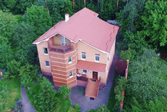

Головна
Про нас
Судді
Розслідування
Відео
Гарник Людмила Леонідівна.
Київський апеляційний господарський суд.
Кар'єру судді Людмила Леонідівна розпочала в 2000р., коли стала суддею Господарського суду Одеської області. Під час проходження первинного оцінювання, багато питань у членів Комісії виникло щодо майна судді. Ми ж розібралися в деяких з них більш детально.

Авраменко Микола Григорович.
Апеляційний суд Київської області.
Микола Григорович у своїй декларації за 2014р. вказав суму сукупного доходу за рік у розмірі майже 2 млн.грн.(!) Звідки ж такі мільйонні доходи у судді? - запитаєте ви, якщо його заробітна плата за рік склала лише 254тис.грн.? Насправді все просто.
Сокуренко Дмитро Михайлович.
Апеляційний суд міста Києва.
23 квітня 2014р. Указом в.о. Президента України Турчинова з апеляційного суду Донецької області до апеляційного суду міста Києва було переведено суддю Сокуренка Дмитра Михайловича.
А СУДДІ ХТО?
Copyright © 2016 PROSUD